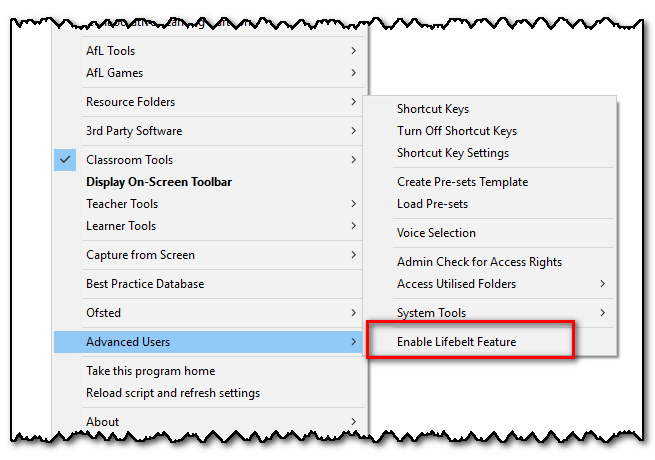
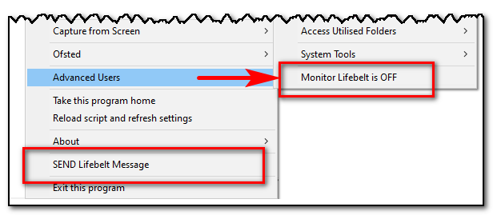
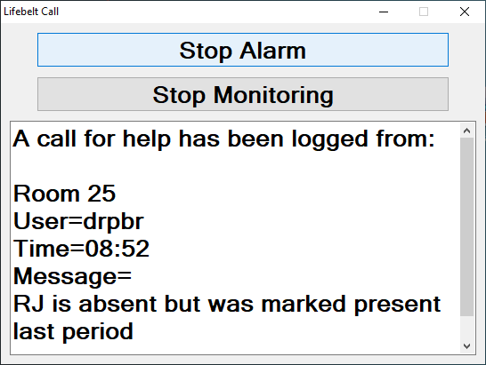
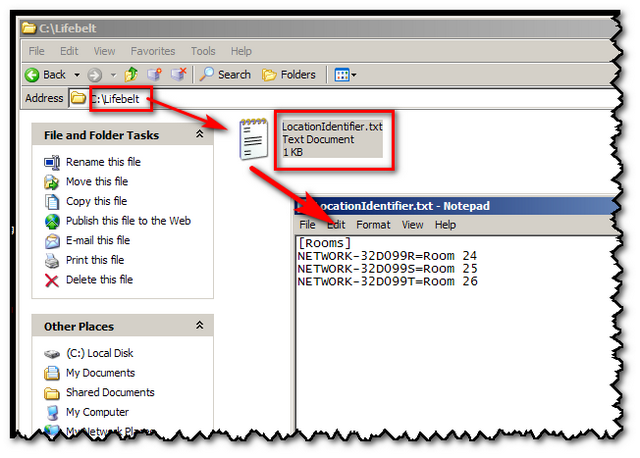
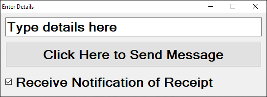
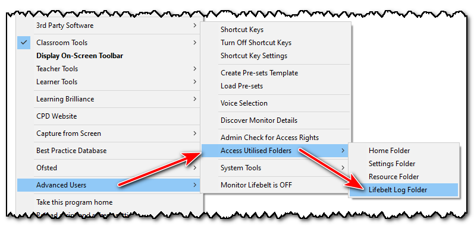

Lifebelt
The lifebelt feature allows a teacher to ask for emergency help, without having to leave the classroom.
If you are running the Teacher Toolkit from a shared network folder, and have the ability to read from, and write to, this folder - then you have the option of enabling the lifebelt feature:

This creates a folder, next to the Teacher Toolkit, called Lifebelt.
Once this folder exists, whenever the Teacher Toolkit starts it will have two additional options in the menu:
•Monitor Lifebelt (which can be toggled on or off)
•Send Lifebelt Message

SEND LIFEBELT MESSAGE
When someone clicks "Send Lifebelt Message" details of their workstation and user account name are stored as a text file in the lifebelt folder.
The text files are titled with today's date and act as a log of all the lifebelt calls made.
MONITOR LIFEBELT
Once this is turned on by an individual, this user will be alerted whenever a new call is logged.

This enables a non-teaching member of staff to alert that assistance is needed.
Note - Pressing Esc (Escape) when the lifebelt alarm is sounding will stop the beeping; this will also work if the user has left the pc (requiring logon).
Top tip:
If specific members of staff always act as lifebelt monitors, their Teacher Toolkit can be set to start with the Monitor Lifebelt toggle set to ON.
Do this by setting the Run Parameter to Lifebelt.
Top tip 2:
If your workstations are difficult to identify using the naming system in place, a conversion file can be created to identify the room name:

Top tip 3:
If your lifebelt call is important, you can request notification that it has been received - do this by ticking the "Receive Notification of Receipt"

Note - record of all the lifebelt calls sent, and notifications returned, are available from the Advanced Users menu:
